기름진 산마를 오오바(깻잎)로 감싸 튀겼습니다. 상큼한 매실과 함께, 그대로 즐겨보세요! [화이트] 코슈와 잘 어울립니다!

가을의 대표 메뉴. 향긋한 마이타케를 바삭하게 튀겼습니다. 소금이나 덴츠유와 함께 맛있게 즐기실 수 있습니다! [레드] 피노 누아와 잘 어울립니다!

튀겨서 단맛이 더해진 무화과에 고르곤졸라 치즈가 녹아듭니다. 발사믹 소스와 함께, 그대로 즐겨보세요! [레드] 마스캇 베일리A와 잘 어울립니다!
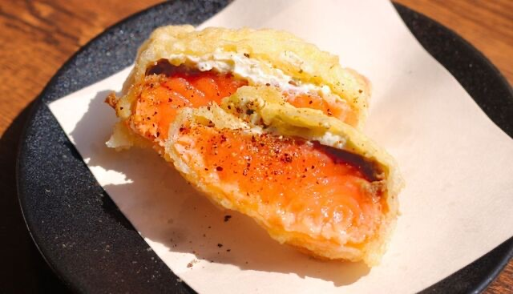
가을 인기 덴푸라! 기름진 연어와 풍미 좋은 갈릭치즈를 덴푸라로 즐겨보세요!
그대로 드셔도 좋습니다
[화이트] 샤르도네와 잘 어울려요!
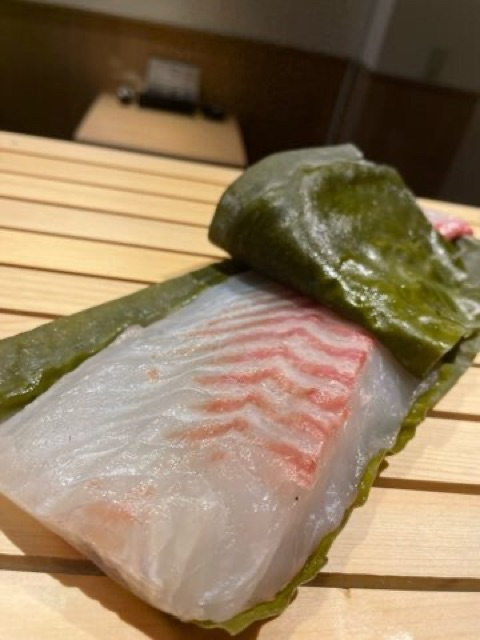
도미의 고급스러운 단맛에 다시마의 감칠맛을 더했습니다. 먼저 그대로 맛보세요!
[화이트] 고슈와 잘 어울려요!
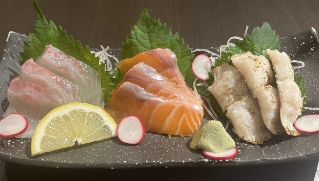
세 가지 신선한 생선을 즐길 수 있는 풍성한 모둠입니다.
[화이트] 고슈와 잘 어울려요!

기름진 산마의 껍질을 고소하게 구웠습니다. 약간의 양념과 함께 상큼하게 즐겨보세요!
[화이트] 고슈와 잘 어울려요!

기름진 가을 가다랑어를 고소하게 구워냈습니다. 약간의 고명을 듬뿍 올려 드세요! [화이트] 고슈와 잘 어울립니다!

부드러운 단맛과 매끄러운 식감의 수제 감자 샐러드. 입가심이나 안주로도 좋아요!
Potato salad/감자 샐러드

머스캣의 단맛, 생햄의 짭짤함, 치즈의 깊은 맛이 어우러집니다. 스파클링 와인과 잘 어울립니다!
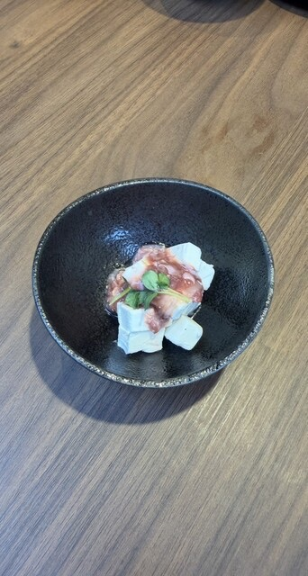
진한 슈토의 감칠맛을 크림치즈가 부드럽게 감싸줍니다. 좋아하는 술과 함께 즐겨보세요!
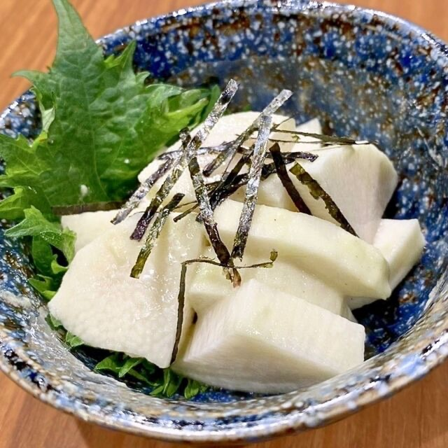
아삭아삭한 나가이모에 와사비의 향이 더해집니다. 덴푸라 사이에 입가심으로 즐겨보세요!
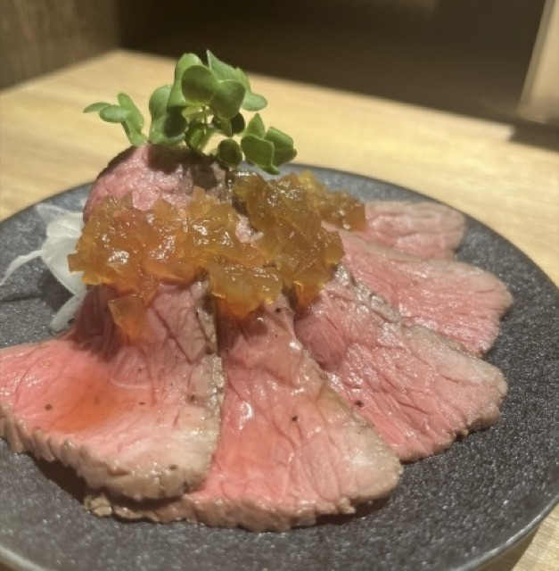
고기의 풍미를 제대로 느낄 수 있는 자랑의 로스트비프입니다. [레드] 피노 누아와 잘 어울립니다!
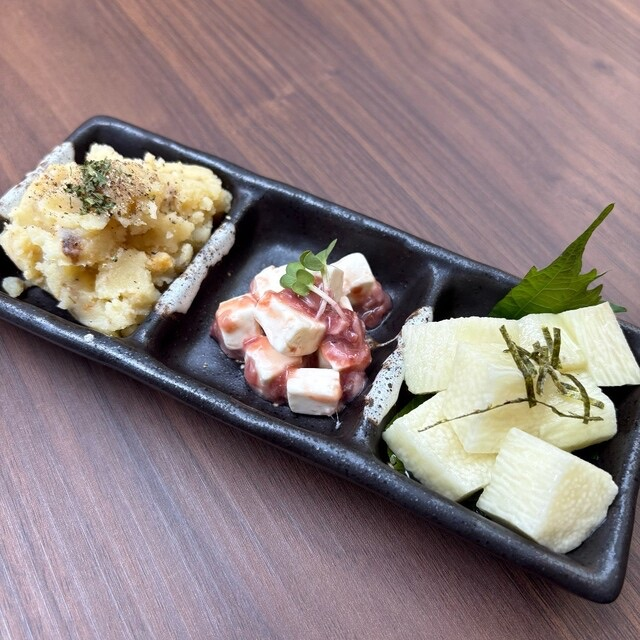
전채를 조금씩 맛볼 수 있는 작은 그릇 모둠입니다. 좋아하는 술과 함께 즐겨보세요!

차갑고 달콤한 냉동 무화과와 모짜렐라를 생햄과 함께. 스파클링 와인과 곁들여보세요!
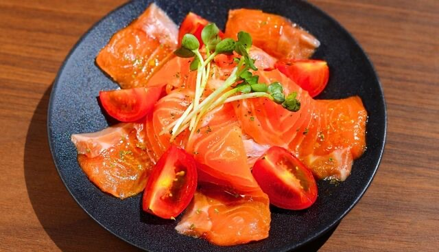
제철의 싱싱한 연어를 토마토와 올리브오일로 산뜻하게 마무리한 전채입니다. 식사 시작에 추천!
[로제] 로제 스파클링과 잘 어울려요!
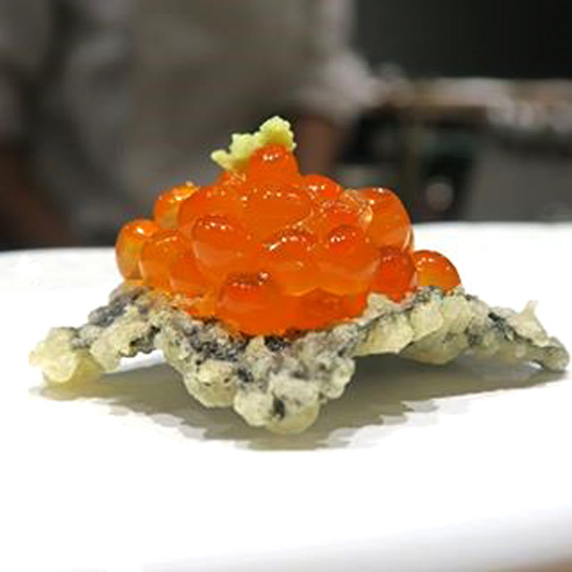
오시오의 시그니처! 톡톡 터지는 연어 알의 진한 감칠맛과 김 덴푸라의 식감을 즐기실 수 있습니다. 스파클링 와인과 궁합이 좋아요!
Salmon roe canape /연어 알

인기 메뉴 중 하나. 네기토로와 단무지의 아삭한 식감이 최고의 조화를 이룹니다. 스파클링 와인과 잘 어울려요!
Raw Tuna and Pickled Japanese Radish Canape/참치와 단무지

정석! 탱글탱글한 식감과 갓 튀긴 고소함을 즐겨보세요. 모시오(소금)에 찍어 드시면 더욱 맛있어요! 로제 스파클링과도 잘 어울립니다.
Shrimp/새우
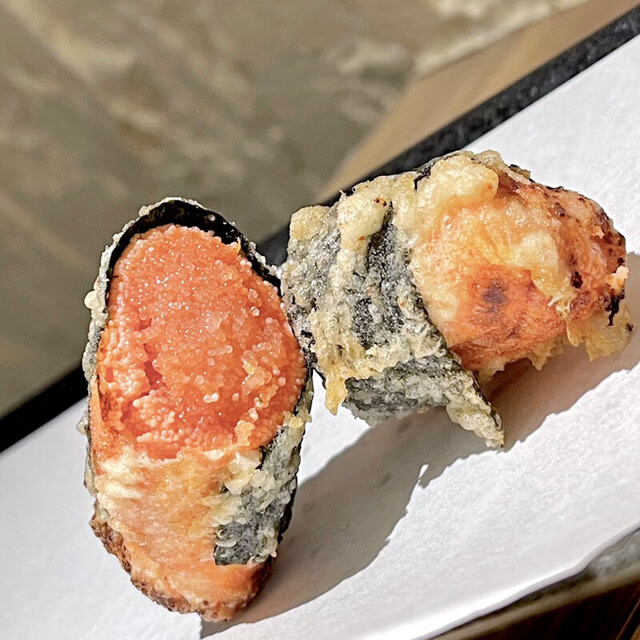
진한 명란젓의 감칠맛을 튀김옷에 감쌌습니다. 그대로 드셔도 좋아요! [화이트] 리슬링과 잘 어울려요!
Spicy pollack roe/명란젓

도톰한 붕장어 살과 고급스러운 기름의 감칠맛. 모시오(소금)나 덴츠유(튀김 소스)에 찍어 드세요! [레드] 마스캇 베일리 A와 잘 어울려요! ※사진은 2개 분량입니다.
Conger eel /붕장어
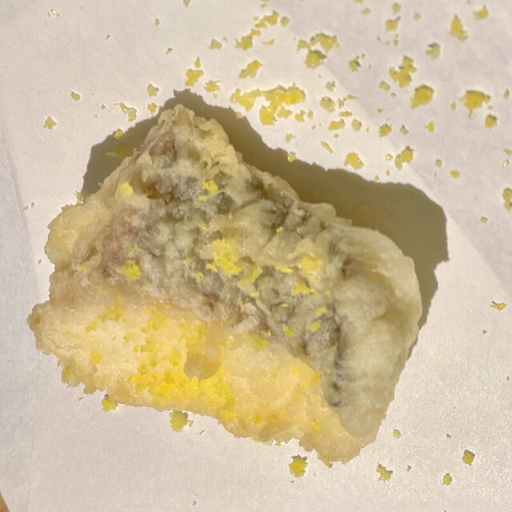
신선한 마다이에 레몬필의 상큼한 향이 완벽하게 어울립니다. 그대로 드셔도 좋고, 로제 스파클링 와인과 함께 즐겨보세요!
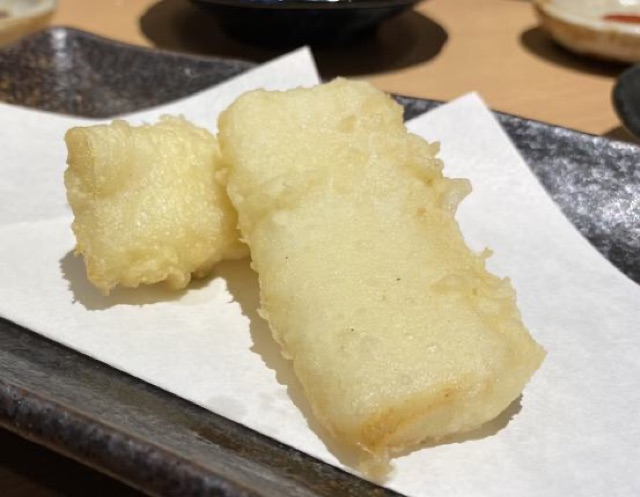
쫄깃한 식감과 은은한 단맛이 매력입니다. 소금이나 덴츠유와 함께 즐기세요! [화이트] 비오니에와 잘 어울립니다!
cuttlefish
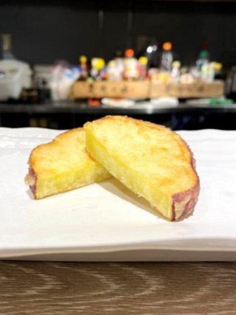
약한 불에서 2시간 천천히 튀겨 고구마의 단맛을 한껏 끌어냈습니다. [레드] 카베르네 소비뇽과 잘 어울립니다!
Sweet potato/고구마
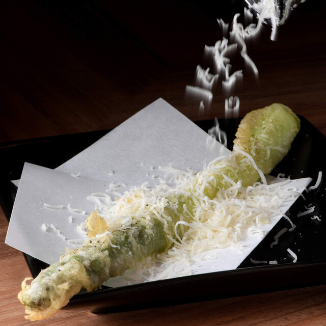
대인기 메뉴! 아스파라거스에는 파르미자노 치즈가 딱 어울립니다. 뜨거울 때 바로 드세요! [화이트] 소비뇽 블랑과 잘 어울립니다!
Asparagus with parmesan/아스파라거스
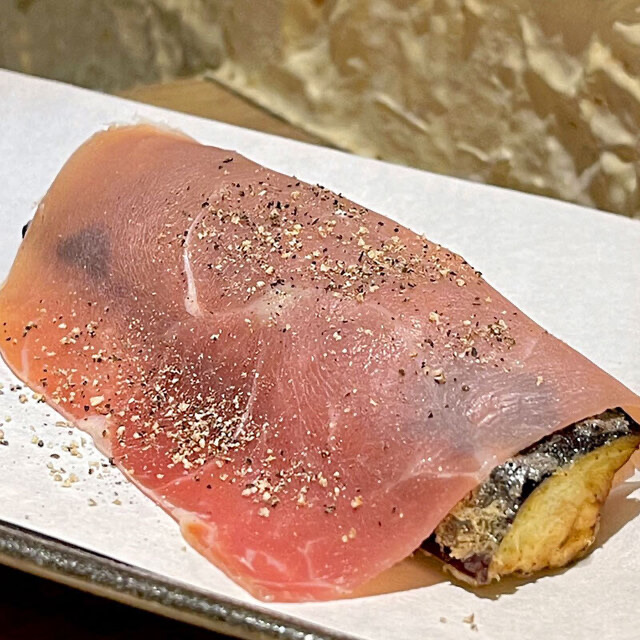
갓 튀긴 가지와 프로슈토의 짭짤함이 최고의 조화를 이룹니다. 뜨거울 때 바로 드세요! [레드] 피노 누아와 잘 어울립니다!
Eggplant wrap whit prosciutto/가지

부드럽게 튀겨진 아보카도와 와사비 마요가 잘 어울립니다. 소스와 함께 즐겨보세요! [화이트] 샤르도네와 잘 어울립니다!
Avocado with wasabi mayo/아보카도
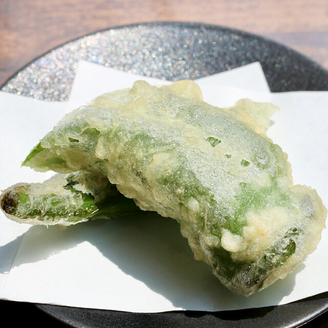
교야사이인 만간지 토가라시는 부드러운 단맛이 특징입니다. 암염을 살짝 찍어 즐겨보세요!
[화이트] 고슈와 잘 어울려요!
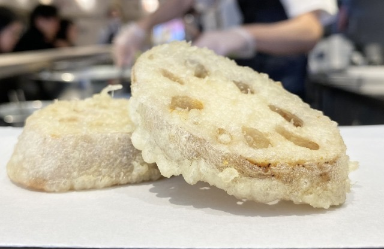
아삭아삭한 식감과 고소함이 매력적입니다. 소금이나 덴츠유와 함께 드세요!
[레드] 카베르네 소비뇽과 잘 어울려요!

튀겨서 단맛이 살아난 양파와 부드러운 식감이 특징입니다. 소금이나 덴츠유와 함께 즐기세요! [레드] 카베르네 소비뇽과 잘 어울립니다!
onion/양파
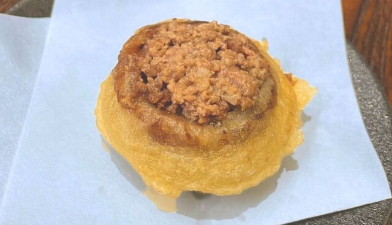
제철을 맞은 표고버섯의 깊은 맛에 고기된장의 풍미를 더한 덴푸라입니다. 그대로 드셔도 좋습니다!
[레드] 카베르네 소비뇽과 잘 어울립니다!
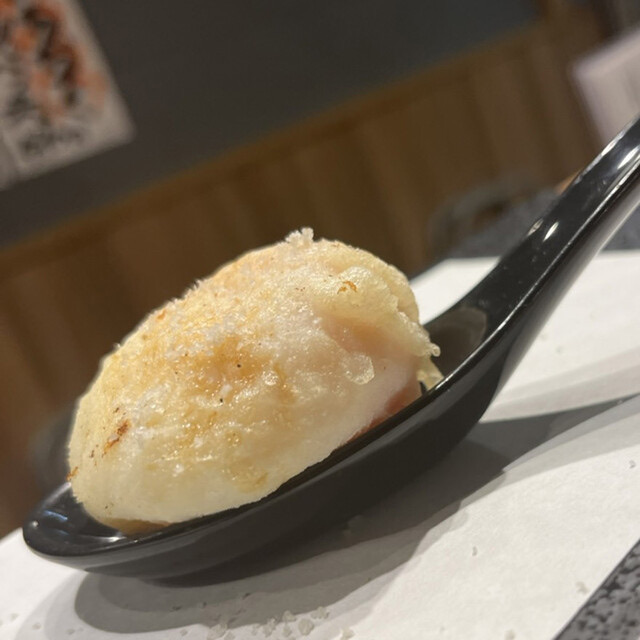
튀김옷 안에서 반숙 노른자가 부드럽게 녹아내립니다. 덴츠유에 찍어 뜨거울 때 드세요! [화이트] 샤르도네와 잘 어울립니다!
Soft boiled egg/계란
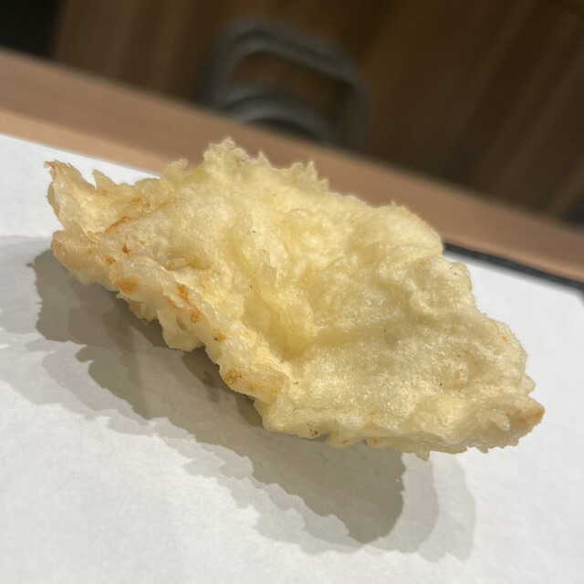
육즙 가득한 닭고기를 바삭하게 튀겼습니다. 덴츠유에 찍어 뜨거울 때 드세요! [레드] 피노 누아와 잘 어울립니다!
Chicken breast/닭고기

바다 향이 퍼지는 모두가 좋아하는 치쿠와 이소베. 소금이나 덴츠유와 함께 즐기세요! [화이트] 비오니에와 잘 어울립니다!
Chikuwa seaweed flavor/어묵
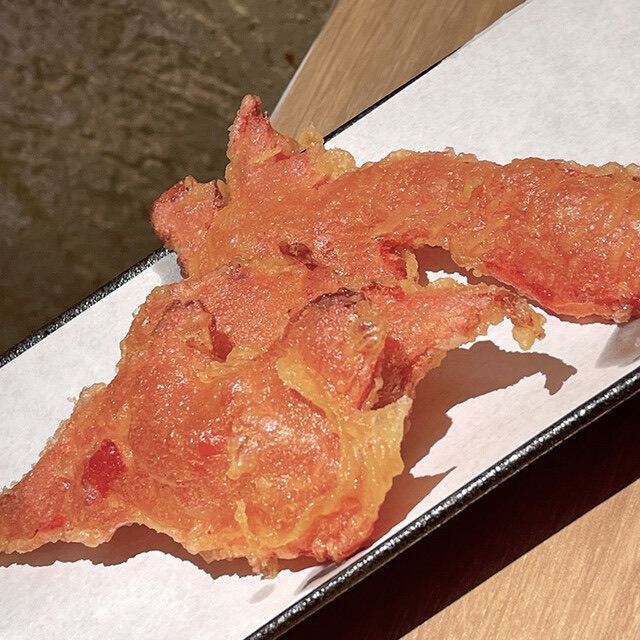
오사카 명물! 매콤함과 새콤함이 매력적인 전통 덴푸라입니다. 덴츠유를 살짝 찍어 드세요! 스파클링 와인과도 잘 어울립니다!
Red pickled ginger/생강
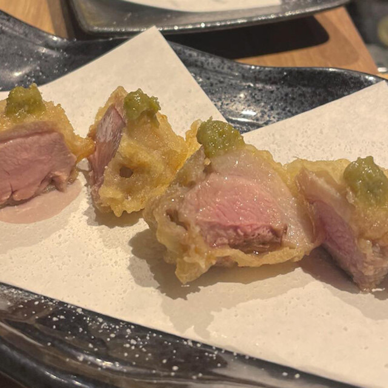
오리고기의 진한 풍미를 바삭한 튀김옷에 가두었습니다. 그대로 드셔도 좋습니다! [레드] 피노 누아와 잘 어울립니다!
Duck meat
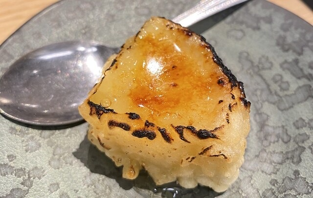
고급스럽게 카망베르 치즈 덴푸라를 캐러멜라이즈했습니다. 꿀과 함께 뜨거울 때 즐기세요! [화이트] 샤르도네와 잘 어울립니다!
Camembert with blueberry sauce/카망베르

에비텐(새우 튀김)을 김과 밥으로 감싼 마무리 메뉴입니다. 달콤한 소스가 환상적으로 어울립니다!
Shrimp tempura roll/새우 테마키

반숙 계란 덴푸라를 밥 위에 올린 마무리 덮밥입니다. 달콤한 소스가 밥에 스며들어 노른자와 함께 즐기세요!
Mini Tendon ~Soft boiled egg tempura on the rice~/계란 덮밥
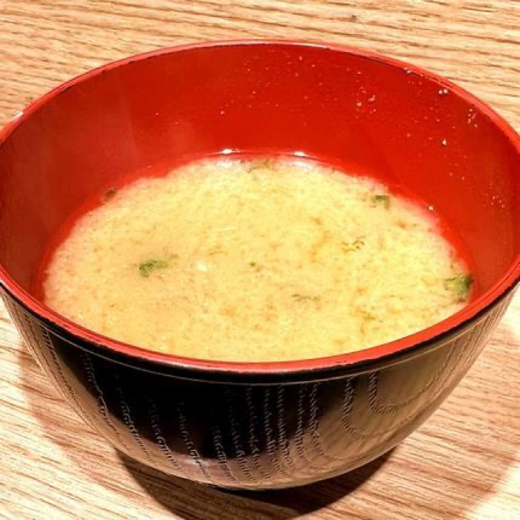
진한 된장 향과 따뜻한 감칠맛을 즐길 수 있는 국물 요리입니다. 요리와 함께 또는 식사의 마무리로도 좋습니다.
Miso soup
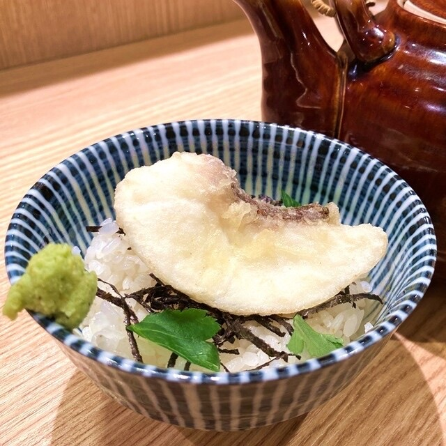
도미 튀김의 감칠맛과 밥을 함께 즐길 수 있는 오차즈케입니다. 튀김옷의 고소함을 느끼며 식사의 마무리로 추천합니다.
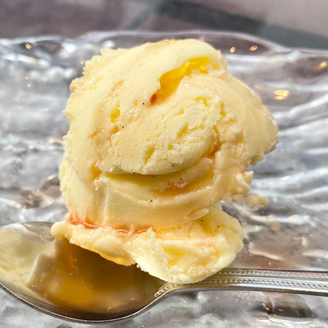
부드러운 바닐라 아이스크림에 디저트 와인을 곁들였습니다. 달콤한 향이 어우러진 어른을 위한 디저트를 즐겨보세요.
Vanilla Icecream with dessert wine/바닐라 아이스크림 와인과 같이

Draft beer

Whisky and Soda
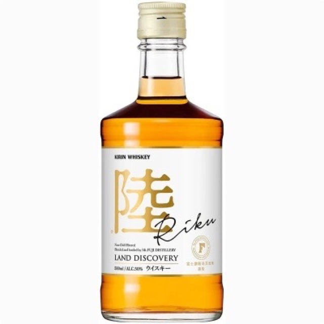
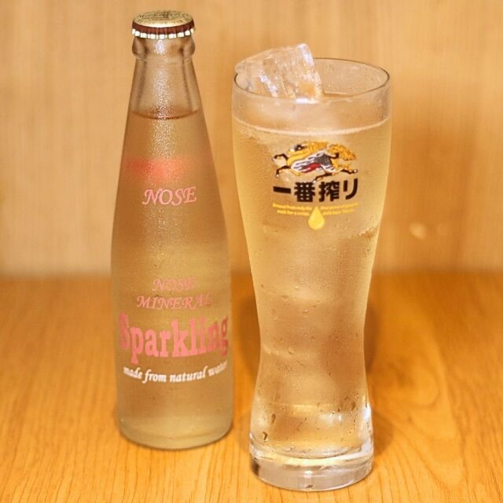

Lemon sour
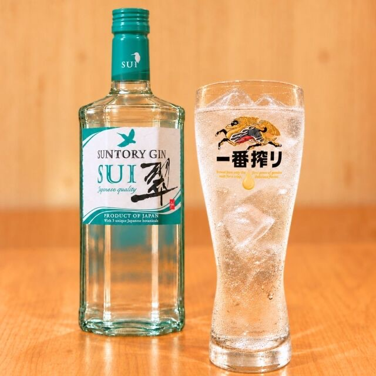

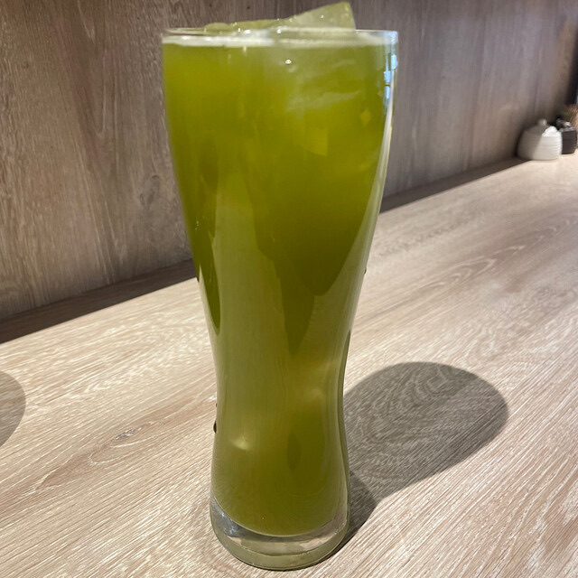

통통한 거봉을 아낌없이 사용했습니다.
과육이 들어간 가을 한정 사워!

Shochu Barley on the rocks
Shochu Barley and water
Shochu Barley and hot water
Shochu Barley and soda
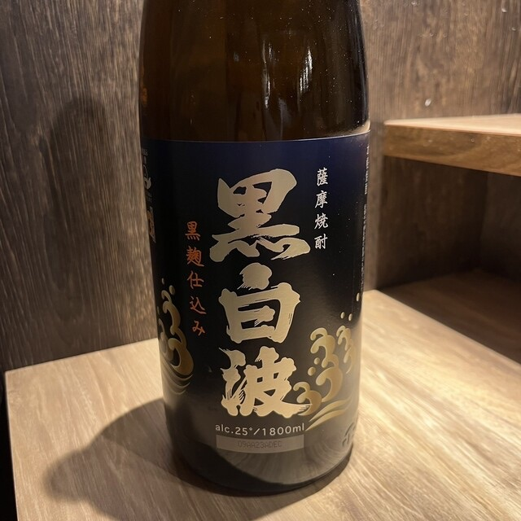
Shochu Sweet potato on the rocks
Shochu Sweet potato and water
Shochu Sweet potato and hot water
Shochu Sweet potato and soda
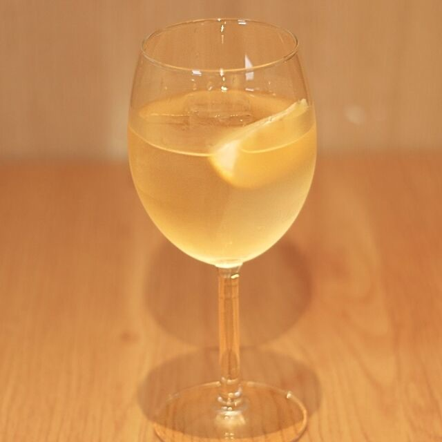
Sangria White

통통한 거봉을 아낌없이 담았습니다.
과육이 들어간 가을 한정 상그리아!

Oolong tea
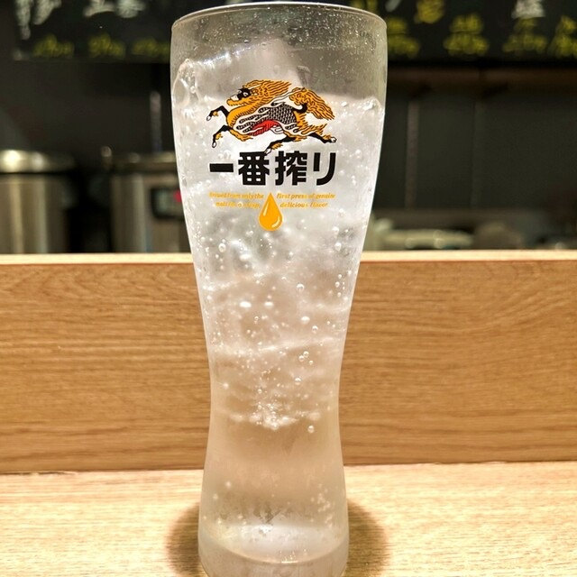
Sparkling water
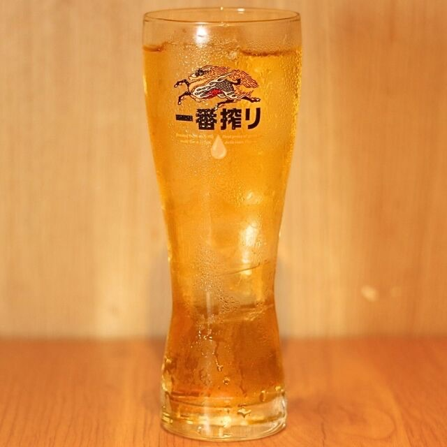

Grape vinegar Soda (Non-alcohol)

통통한 거봉을 아낌없이 담았습니다.
과육이 들어간 가을 한정 소다!
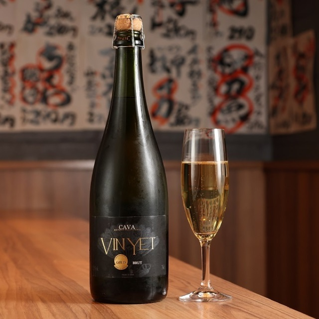
깔끔하고 드라이한 맛이 덴푸라의 고소함을 산뜻하게 살려주는 스파클링(스페인산)입니다.
◎ 추천 페어링: 이쿠라 카나페, 각종 덴푸라
스파클링 와인 / 글라스
산뜻한 드라이함이 덴푸라의 고소함을 가볍게 살려주는 스페인산 스파클링입니다.
◎ 추천 페어링: 이쿠라 카나페, 다양한 덴푸라
스파클링 와인 / 보틀
문의해 주세요.
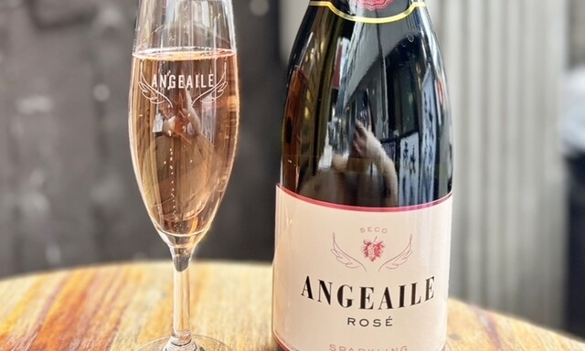
소금이나 덴츠유와도 잘 어울리며, 새우와 도미의 맛을 돋보이게 하는 만능 로제입니다 (스페인).
◎ 추천 페어링: 새우, 도미~레몬필~
로제 스파클링 와인 / 글라스
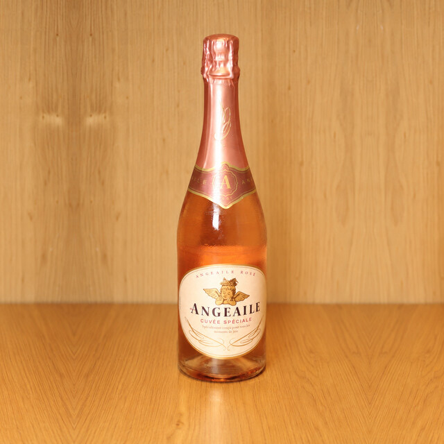
소금이나 덴츠유와도 잘 어울리며, 새우와 도미의 맛을 돋보이게 하는 만능 로제입니다 (스페인).
◎ 추천 페어링: 새우, 도미~레몬필~
로제 스파클링 와인 / 보틀
문의해 주세요.

통통한 거봉을 아낌없이 담았습니다.
과육이 들어간 가을 한정 로제!
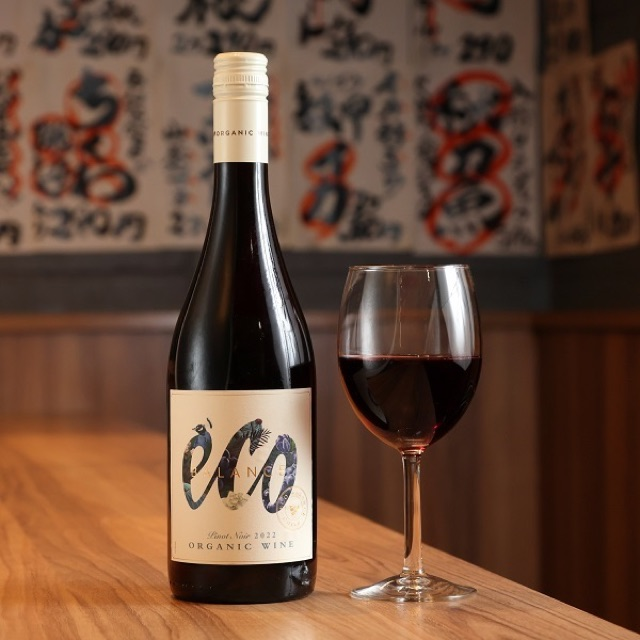
딸기와 체리 향이 퍼지는, 가볍고 부드러운 레드 와인입니다 (칠레).
◎추천 페어링: 오리, 닭고기 덴푸라, 가지~프로슈토~
피노 누아 / 글라스

카시스의 풍부한 향과 깊은 맛, 중후한 풍미를 즐길 수 있는 레드 와인입니다 (프랑스).
◎추천 페어링: 고구마, 표고버섯~갈릭치즈~
카베르네 소비뇽 / 글라스

야생 딸기의 은은한 향과 베리 과일 맛이 부드럽게 어우러진 로제 와인입니다(일본).
◎ 추천 페어링: 아나고텐 (붕장어 튀김)
딸기와 체리 향이 퍼지는, 가볍고 부드러운 칠레산 레드입니다.
◎ 추천 페어링: 오리, 가시와텐, 가지~프로슈토~
피노 누아 / 보틀
문의해 주세요.
카시스의 풍부한 향과 깊은 맛, 중후한 풍미를 즐길 수 있는 프랑스산 레드입니다.
◎ 추천 페어링: 고구마, 표고버섯~갈릭치즈~
카베르네 소비뇽 / 보틀
문의해 주세요.